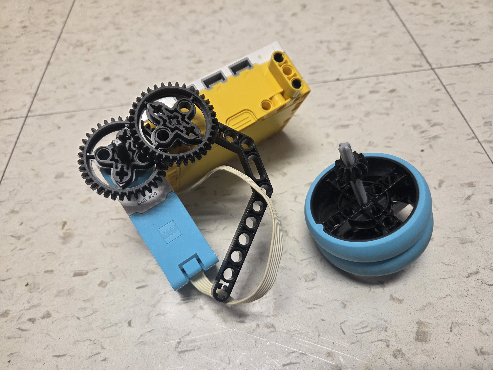
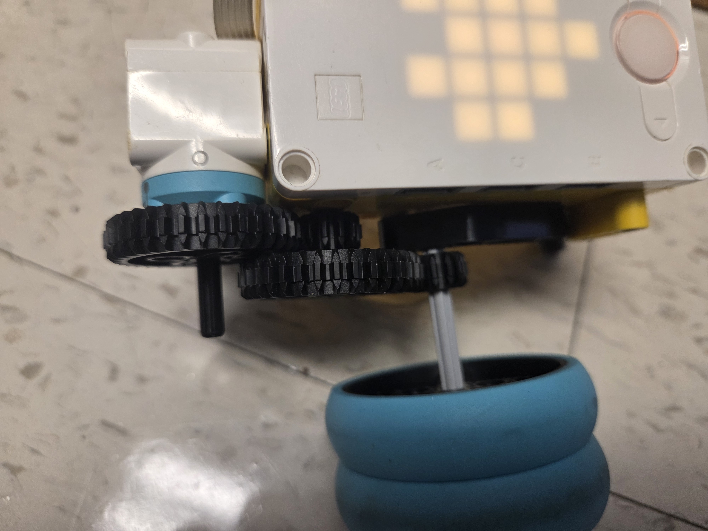

For this activity, we used what we learned during a lesson about gears to build a top and a mechanism to release and spin it. By gearing down and putting gears in sequence, we were able to get our tops spinning much faster than if we only used the motor.